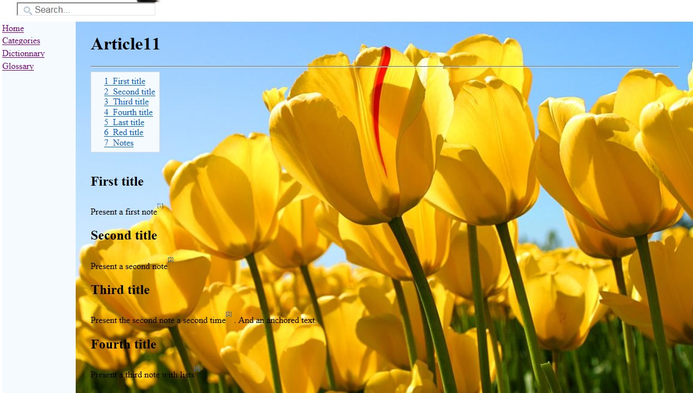
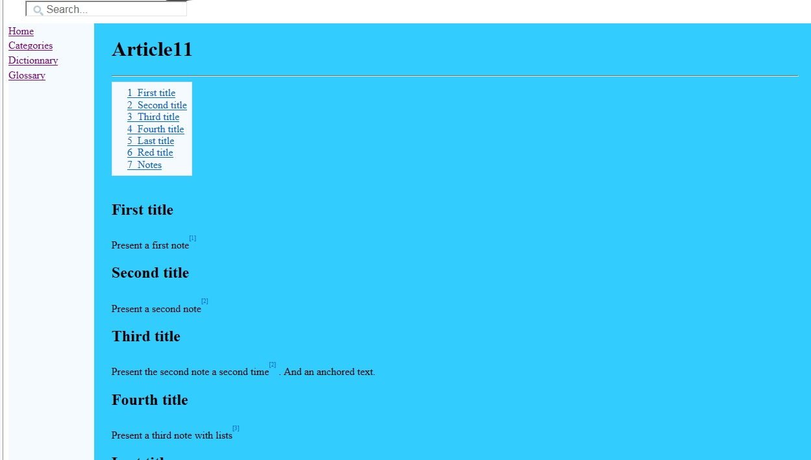
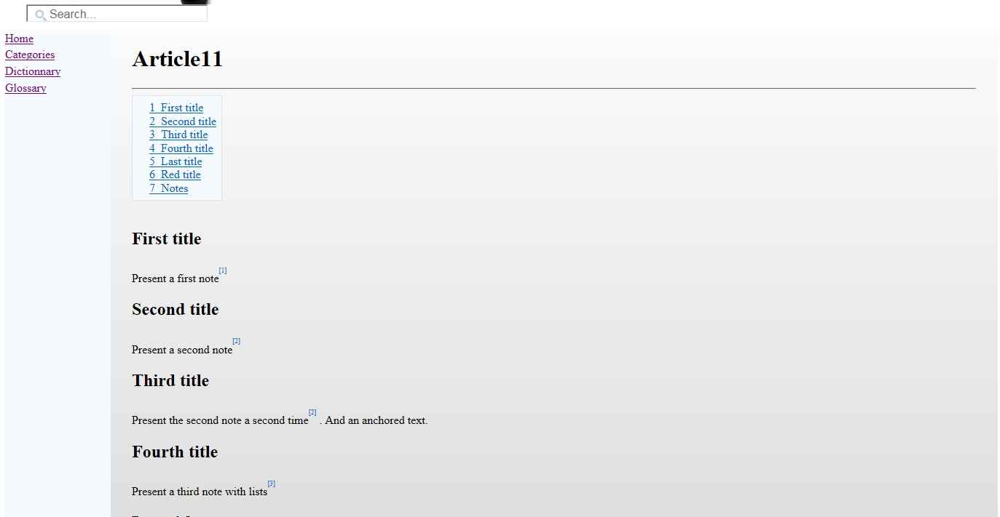

Home
Categories
Dictionary
Download
Project Details
Changes Log
What Links Here
How To
Syntax
FAQ
License
Setting a background
1 Background image
2 Background color
3 Customizing the background
4 Examples
4.1 Example with an image
4.2 Example with a color
4.3 Example with a color gradient
5 Notes
6 See also
2 Background color
3 Customizing the background
4 Examples
4.1 Example with an image
4.2 Example with a color
4.3 Example with a color gradient
5 Notes
6 See also
By default there is no background on the wiki pages, but several properties allow to customize the background:
You can specify the opacity of the background image with the backgroundOpacity" property (integer value from 0 to 100).
We can also add an opacity for the image with for example:
- The "background" property in the configuration file or the command-line allows to add a background to the article pages
- The "backgroundOpacity" property allows to specify the opacity of the background image (integer value from 0 to 100)
- The "backgroundColor" property allows to add a background Color or gradient to the article pages. The format of the Color must be an HTML Color ID[1]
For example -backgroundColor=#33CCFF
- The "backgroundGlobal" property is a boolean specifying that the background must be set for all pages (default is true)
Background image
The property is the absolute or relative path of the image used for the gradient (For example-background=my/image/image.jpg). The format of the image can be "jpg" or "png".You can specify the opacity of the background image with the backgroundOpacity" property (integer value from 0 to 100).
Background color
- You can specify only one color (For example
-backgroundColor=#33CCFF). In that case the background will use only one color - You can also specify a gradient with two colors (For example
-backgroundColor=#FFFFFF;#CCCCCC). In that case the background will use a vertical gradient defined with the two colors
Customizing the background
Thediv.middleWithImage and div.middleForIDXWithImage CSS rules allow to specify how the background is presented. The default is:div.middleWithImage, div.middleForIDXWithImage { float: left; width: 80%; padding: 0 2%; margin: 0; min-width: 400px; margin-bottom: 10px; background-image: url("Background.png"); background-position: center; background-repeat: no-repeat; background-size: cover; }It is possible to customize the background by overriding these properties in the Custom StyleSheet file. For example:
div.middleWithImage, div.middleForIDXWithImage { background-position: top !important; background-repeat: repeat!important; background-size: contain !important; }
Examples
Example with an image
With the following command-line property:
-background=myBackground.png

We can also add an opacity for the image with for example:
-background=myBackground.png -backgroundOpacity=50
Example with a color
With the following command-line property:
-background=#33CCFF
We will have the following background:
Example with a color gradient
With the following command-line property:
-backgroundColor=#FFFFFF;#CCCCCC
We will have the following background:
Notes
- ^ For example -backgroundColor=#33CCFF
See also
- Configuration file: It is possible to define an optional property / value configuration file when starting the application (using the graphical UI or the command line)
- Command-line starting: This article is about how to execute the application by the command-line without showing the UI
×

Categories: Configuration